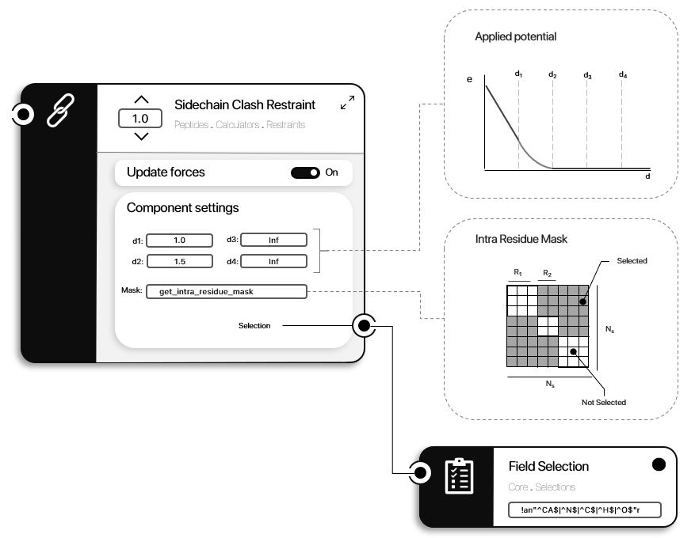

Sidechain Clash Restraint
The Sidechain Clash Restraint is a potential restraint (See Potential restraints for more details), applying a penalty for pairs of interacting atoms (belonging to different sidechains) with distances under a given threshold.
ProtoSyn.Peptides.Calculators.Restraints.get_default_sidechain_clash_restraint — Functionget_default_sidechain_clash_restraint(;α::T = 1.0, mask::Opt{ProtoSyn.Mask} = nothing) where {T <: AbstractFloat}Return the default sidechain clash restraint EnergyFunctionComponent. α sets the component weight (on an EnergyFunction instance). If a mask is provided, the component will apply that mask every calculation (fixed mask) - recommended, except for design efforts. Otherwise, the default get_intra_residue_mask function will be used, which calculates a new intra-residue mask every calculation.
Sidechain clash energy settings
- :d1, :d2, :d3, :d4 -> set each of the distances defining a flat-bottom potential (in Angstrom Å);
- :selection -> defines the atom selection limiting the considered atoms for the calculation;
- :mask -> defines the mask applied to the energy and forces result;
See also
ProtoSyn.Calculators.Restraints.calc_flat_bottom_restraint ProtoSyn.Calculators.get_intra_residue_mask
Examples
julia> ProtoSyn.Peptides.Calculators.Restraints.get_default_sidechain_clash_restraint()
Name : Clash_Sidechain_Restraint
Weight(α) : 1.0
Settings :
:d4 => Inf
:selection => UnarySelection ❯ ! "not" (Atom)
└── FieldSelection › Atom.name = r"^CA$|^N$|^C$|^H$|^O$"
:d2 => 1.5
:mask => _intra_residue_mask
:d1 => 1.0
:d3 => Inf
Figure 1 | A diagram representation of the Sidechain Clash Restraint EnergyFunctionComponent. The applied potential is a flat bottom function, with only the lower bound having and energy penatly. The d1 and d2 settings can be customly parametrized. This energy is only calculated for pair of interacting Atom instances in sidechains of different Residue instances (as defined the the provided AbstractSelection and mask).